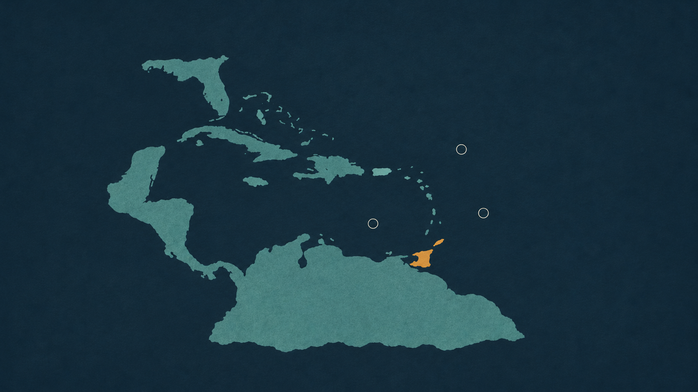

Caribbean · government statement · 17 November 2026
Trinidad and Tobago denies negotiating to receive US third-country deportees.
A Senate question prompted a government denial; separate official guidance concerns the country’s own nationals, not third-country deportees.

What We Know
TTT News reported that Minister in the Office of the Prime Minister Darrell Allahar said the Government of Trinidad and Tobago had not entered into, and was not negotiating, an arrangement with the United States to receive third-country nationals deported from the US. The matter arose from an opposition question in the Senate.
Why It Matters
Official guidance about accepting Trinidad and Tobago citizens who are ordered deported is a separate issue from accepting third-country nationals. Keeping that distinction visible prevents two different policies from being collapsed into one claim.
What We’re Watching
- Any formal agreement, cabinet statement or parliamentary transcript.
- Later clarification from the Foreign and CARICOM Affairs Ministry or the United States.
- Whether the government’s position changes.